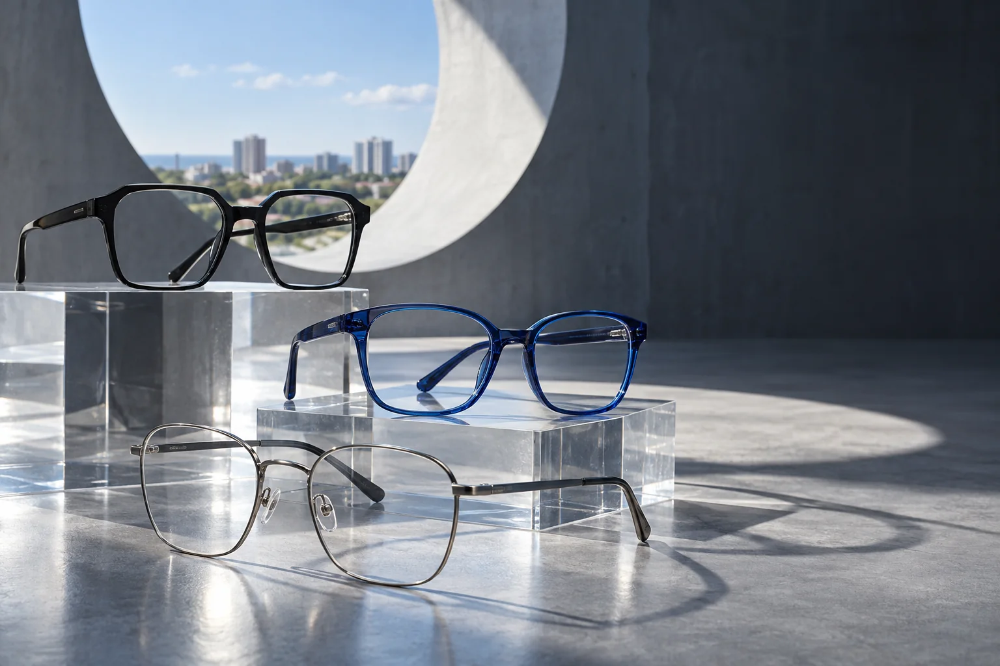

Contraste
Geometria
Linhas definidas e presença visual.

Ótica no José Walter
Um começo visual para você chegar à loja sabendo o que quer experimentar.
Use as formas como referência. Modelos, cores, lentes, marcas e disponibilidade são confirmados pela equipe.
Linhas definidas e presença visual.
Leveza com um ponto de cor.
Traço fino e desenho essencial.
Este guia trata somente de estilo. Medidas, lentes e qualquer necessidade visual exigem avaliação profissional.
Um fluxo curto para deixar o atendimento mais objetivo.
Formato, cor e material ajudam a equipe a separar opções.
Envie sua referência e confirme o que está disponível.
Ajuste e proporção só podem ser avaliados presencialmente.
Rua Clarice Lispector, quadra 07, bloco 15, lote 01, Prefeito José Walter, Fortaleza.